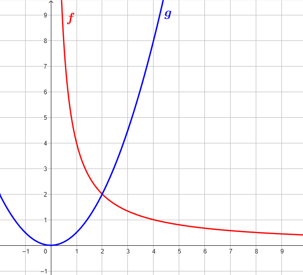

Nella seguente figura sono rappresentati i grafici delle funzioni \(f\) (in rosso) e \(g\)(in blu).

-
Per quale valore di \(x\) la funzione \(f\) assume valore \(4\)?
-
Per quali valori di \(x\) la funzione \(g\) assume valori maggiori di \(2\)?
-
Per quale valore di \(x\) le due funzioni assumono lo stesso valore?
-
É vero che \(g(4) \cdot f(8) \lt 8\)?